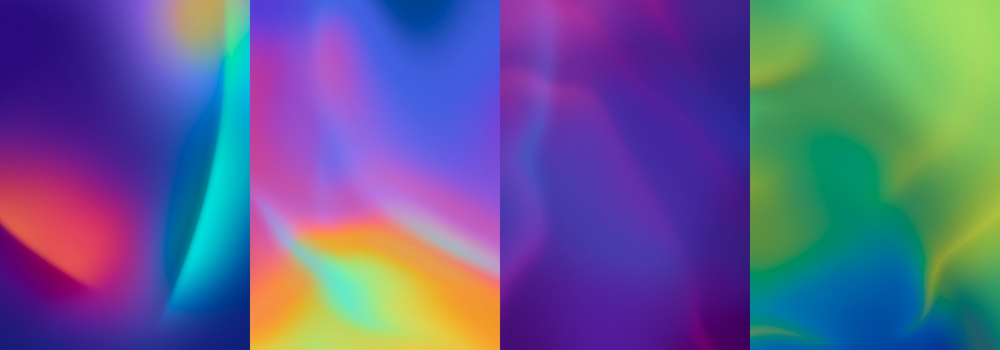

Version 1.2.0 · 2026-10-11 · What's new
Aurora-style gradient weaves: soft colour blooms and fabric-like folds. Make them in your browser, or right inside Figma, at print resolution.

A web page. Nothing to install. Pick a preset, tune it, download a PNG up to print size.
The same panel inside Figma. Insert weaves as editable layers you can reopen and update later.
| Edge sharpness | Soft aurora at low values, crisp silk folds at high values |
|---|---|
| Glow · Aura | How much the light colours spread and bloom |
| Weave rotation | Turns the folds. Gradient angle turns the colours underneath, separately |
| Fold shadow · Roll | On a ribbon layer: the shadow tucked under the fold, and how rounded the fold looks |
plugin/manifest.json inside that folder.It now lives under Plugins → Development → Weave Gradients. You only do this once.
| Editable | The layer remembers its settings. Select it (or click Edit weave in Figma's right panel), change anything, press Update layer |
|---|---|
| Flattened | A plain image with no link back to the plugin |
| Insert new | Stops editing the selected layer so you can make a fresh one |
Use Download rather than inserting into Figma. Pick the paper size and 300 dpi for A4–A1, 150 dpi for A0 and larger — smooth gradients print cleanly at 150. The PNG carries its DPI, so it opens at the right physical size. One file tops out around 240 megapixels.
Inside Figma, anything over 4096 px is split into seamless tiles, because that's Figma's image limit.
Stuck? Send a screenshot — most problems are recognisable on sight.